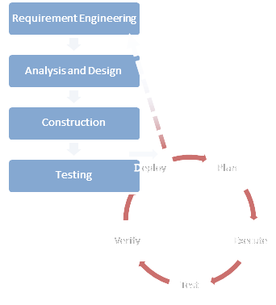

Sidang Tesis
Alex Xandra Albert Sim (23511051)
Judul
Pengembangan Perangkat Lunak Diagnosa Mesin Mobil Berdasarkan Standar OBD-II
Studi Kasus: Mercedes Benz E320 1998 V-Engine
Pendahuluan
ECU (Engine Control Unit)
Unit kontrol yang biasanya ada dalam mobil modern, untuk optimasi performa
ECU Berdampak Positif
untuk manufaktur, tapi bisa mengancam bengkel karena bengkel tidak dapat melakukan reparasi tanpa informasi ECU dari manufaktur
Uni Eropa
Membuat regulasi anti-competitive sehingga ECU tidak boleh dikunci manufaktur
OBD-II
Hasil dari regulasi yang dibahas sebelumyna
Ide Tesis
Eksplorasi teknologi ECU...
cara kerja ECU...
cara komunikasi ECU dengan perangkat lain...
Rumusan Masalah
eksplorasi cara kerja ECU serta pengembangan sebuah perangkat lunak diagnosa yang dapat berkomunikasi dengan ECU...
Perangkat lunak yang berkomunikasi dengan ECU merupakan perangkat lunak diagnosa ECU, yang dapat melakukan pembacaan status kendaraan serta melakukan pengaturan berbagai parameter dalam kendaraan
Tujuan Tesis
Meneliti dan mendokumentasikan cara kerja ECU
- arsitektur
- fungsionalitas
- metode komunikasi
Mengembangkan perangkat lunak diagnosa ECU
sesuai dengan standar OBD-II
Ruang Lingkup
dan
Batasan Masalah
Tesis ini mencakup kajian cara kerja dari ECU, termasuk komunikasi antara ECU dengan perangkat diagnosa. Selain itu, pengembangan perangkat lunak diagnosa juga dilakukan, dengan target pencapaian minimal kompatibilitas dengan standar OBD-II.
Tinjauan Pustaka
Engine Control Unit (ECU)

On-Board Diagnostic (OBD)
3 Kategori Standar:
- Standar Komunikasi dengan ECU
- Standar Perintah ECU (PID)
- Standar Kode Kealahan (DTC)
Protokol Komunikasi OBD-II
- J1850 PWM
- J1850 VPW
- ISO 9141-2
- ISO 14230 (KWP2000)
- ISO 15765-4 (CAN)
Protokol Komunikasi OBD-II
Implementasi populer: ELM327
Parameter ID (PID)
- perintah permintaan informasi
- ditentukan oleh standar OBD-II
- tidak wajib diimplementasikan :(
Mode Operasi Parameter ID (PID)
- Mode 1: data real-time
- Mode 2: data snapshot
- Mode 3: data DTC
- Mode 4: hapus DTC, MIL
- Mode 5: sensor oksigen
- Mode 6: sensor lain-lain
- Mode 7: DTC tertunda
- Mode 8: perintah operasional sistem on-board
- Mode 9: VIN (Vehicle ID Number)
Pembacaan Respon ECU
Pembacaan Respon ECU
Misal:
PID yang dikirim: 01 0C
Respon ECU: 37 74
Bagaimana memproses responnya?
Pemrosesan Respon ECU
Cek rumus untuk 01 0C:
((A * 256) + B) / 4
Aplikasikan dengan respon:
((55 * 256) + 116) / 4
Maka didapatkan putaran mesin ialah: 3549 RPM
Analisis Sistem
Deskripsi Kebutuhan
Secara singkat, kebutuhan sistem yaitu:
- berjalan pada PC standar
- komunikasi dengan ECU
- mengirim perintah dan membaca respon ECU
- memberikan informasi diagnosa mesin
- antarmuka berkendara
- terminal
Rancangan Antarmuka
Perancangan Sistem
Lingkungan Pengembangan
Java Ecosystem
Why Java
- Portable
- Compatible
Programming Language:
Scala
Arsitektur Sistem
Overview
GUI Layer

Model Layer (DB)
Model Layer (Serial)
Konstruksi, Hasil, dan Evaluasi
Konstruksi
Perangkat Lunak
Hybrid Model
Why Hybrid?
Perlu waterfall karena:
Perlu iteratif karena:
Pengembangan secara Waterfall
- Analisis Kebutuhan
- Analisis dan Perancangan Sistem
- Perancangan Basis Data
- Pembacaan data kembalian PID
Pengembangan secara Iteratif
- Antarmuka Sistem
- Controller
- Serial Port model
Hasil Pengembangan
Final Package
Demo Program
Lapisan Antarmuka Sistem
thesis.bert.gui
thesis.bert.gui
thesis.bert.gui.controls
thesis.bert.gui.components
Lapisan Model Sistem
OBDDB
object DTCDetails extends Table[(String, String, Clob)]("DTCDETAILS") {
def id = column[String]("ID", O DBType ("CHAR(4)"), O NotNull)
def dtcId = column[String]("DTCID", O DBType ("CHAR(1)"), O NotNull)
def description = column[Clob]("DESCRIPTION")
def * = id ~ dtcId ~ description
def pk = primaryKey("pk_DTCDetails", id ~ dtcId)
def fkDTC = foreignKey("fk_DTCDetails_DTC", dtcId, DTC)(_.id)
}
OBDModel
SupportedPIDFile
Lapisan Utilitas Sistem
lib.helper.BinaryHelper
lib.serial.*
Evaluasi Hasil
Komunikasi dengan ECU
OK
Kelengkapan OBD-II
79.55%
Akurasi Informasi
X
Akurasi Informasi
| Perangkat | Rata-rata Jeda |
|---|---|
| OBD Simulator | ~1550 ms |
| Mercedes Benz E320 | ~2100 ms |
| Chevrolet Aveo 2003 | ~2800 ms |

Evaluasi Performa
Prosedur Pengujian
- Jalankan aplikasi
- Koneksi ke port serial
- Submenu grafik
-
Parameter:
- Sumbu X: PID 01 0C (RPM Mesin)
- Sumbu Y: PID 01 0D (Kecepatan Kendaraan)
- Tunggu 5 menit
- Disconnect dan matikan aplikasi
Lingkungan Pengujian (Hardware)
- Intel Core i5-2410M (2.3 GHz)
- 8 GB 1333 MHz DDR3
- 1366x768
- 500 GB SATA (5400 RPM)
Lingkungan Pengujian (Software)
- Windows 7 Proffesional 64-bit
- Java version "1.7.0_09"
- Scala code runner version 2.9.2
Hasil Pengujian
{kind=link}
Kesimpulan
dan
Saran
Kesimpulan
- Implementasi OBD-II mudah; membantu bengkel
- Port serial tidak cocok untuk data real-time
Saran
- Protocol Reverse Engineering untuk PID non-standar atau standar tapi tidak terdokumentasi
- Protokol baru untuk data real-time; ECU juga harus diperbaharui
- Expert System atau DSS